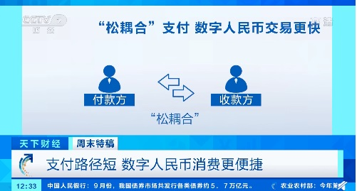

央视财经报道，近日，深圳完成金额总计 1000 万元的数字人民币红包试点测试。那么，央行数字人民币究竟是什么？数字人民币与第三方支付的区别是啥？首先，数字人民币与纸钞和硬币人民币等价，是具有价值特征和法偿性的法币。而支付宝、微信支付等第三方互联网支付方式主要依靠商业银行账户中的存款货币交易，实质上是法币的支付通道。数字人民币属于 M0，即流通中现金的范畴，而人们放在支付宝和微信账户里的钱，则是非存款类金融机构存款，属于 M2 也就是广义货币的范畴。IT之家11月1日消息 央视财经报道，近日，深圳完成金额总计 1000 万元的数字人民币红包试点测试。那么，央行数字人民币究竟是什么？数字人民币与第三方支付的区别是啥？首先，数字人民币与纸钞和硬币人民币等价，是具有价值特征和法偿性的法币。而支付宝、微信支付等第三方互联网支付方式主要依靠商业银行账户中的存款货币交易，实质上是法币的支付通道。数字人民币属于 M0，即流通中现金的范畴，而人们放在支付宝和微信账户里的钱，则是非存款类金融机构存款，属于 M2 也就是广义货币的范畴。

央视报道中表示，相比第三方支付工具，数字人民币的使用更加便捷：①支付路径短。只存在付款方与收款方两个点，不经过任何第三方平台，数毫秒内即可完成交易；②双离线支付。手机有电，即便没有网络也能花数字人民币；③可控匿名。保护消费者隐私，除政府部门在权限范围内调查非法交易的情况外，商户、第三方支付平台无权获取消费者的支付数据，消费者免受营销侵扰。 分析人士预计，未来数字人民币落地应用，还能更好地帮助国家监管货币流通、反腐败、反洗钱，打击犯罪；宏观调控方面，能够优化货币政策，实现精准扶贫、精准支持实体经济发展，并推进人民币国际化。